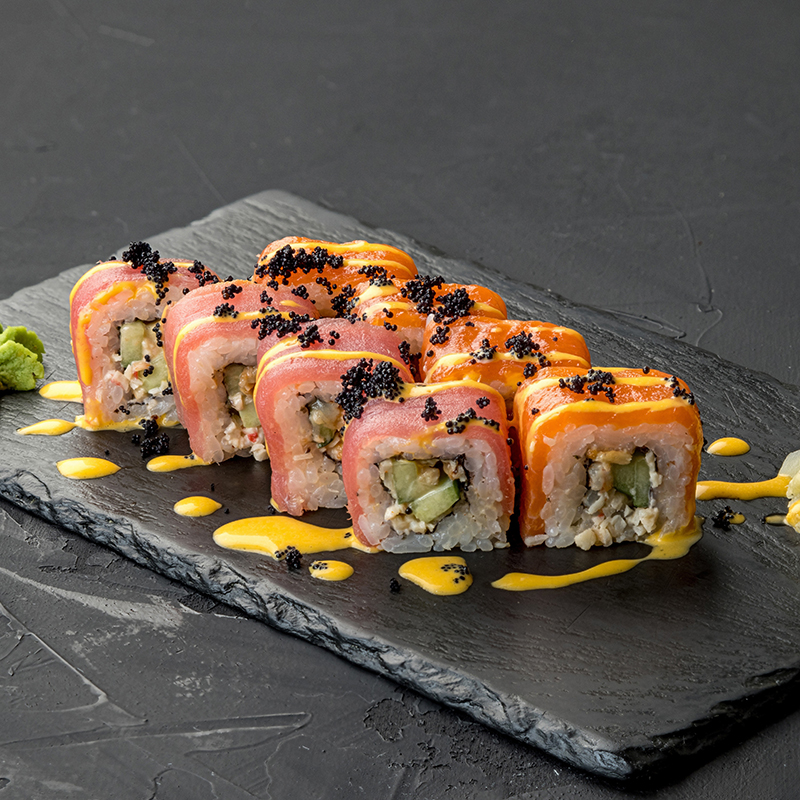
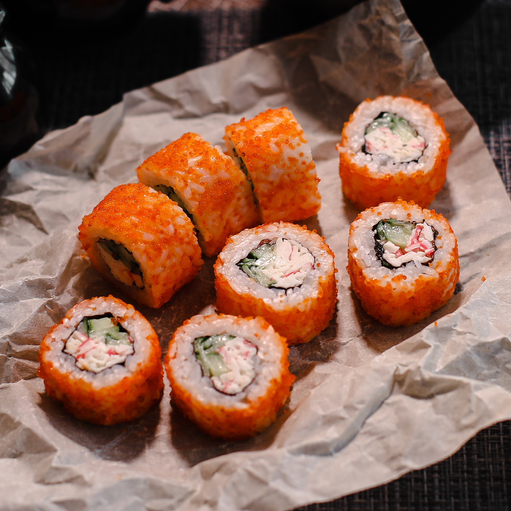
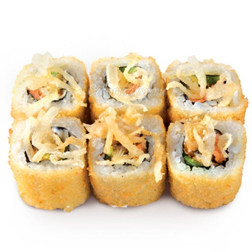
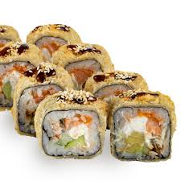

|
Ролл "Окинава"Окинава — ролл с лососем, сливочным сыром и огурцом в классической обёртке из нори. |
|  | Ролл "Сакура"Сакура — нежный ролл с креветкой, авокадо и соусом унаги, украшен розовой стружкой. |
|  | Ролл "Хоккайдо"Хоккайдо — сытный ролл с тунцом, снежным крабом и икрой масаго. |
|  | Ролл "Тануки"Тануки — жареный ролл с курицей терияки, огурцом и майонезом, хрустящий снаружи. |
|  | Ролл "Самурай"Самурай — острый ролл с угрём, авокадо и спайси-соусом, украшен зелёным луком. |
 |
Ролл "Асахи"Асахи — ролл с лососем, сливочным сыром и манго, подаётся с соусом понзу. |
Суши-бар «Йокогама»